1) Graph Parameters
We vary alpha_G and beta_G to analyze how the graph cost balance affects path selection.
Fixed sampling setup for this study: push_ratio=0.20, push_alpha=0.50, push_beta=0.80.
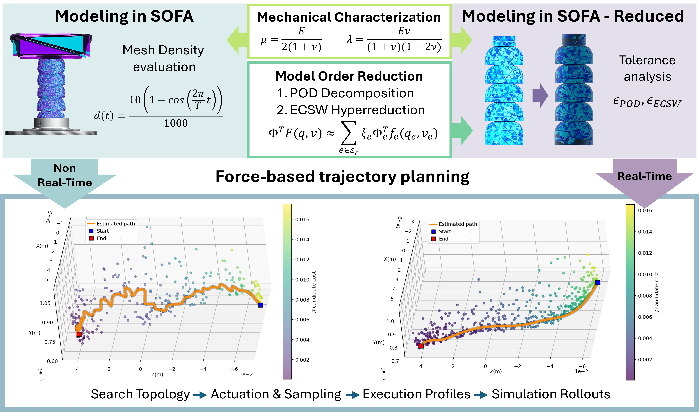
Soft robots enable safe, adaptive interaction, but their large deformations and nonlinear material behavior complicate online planning. While the high-fidelity finite element method (FEM) can capture these effects, its computational cost often precludes real-time use. This paper presents an end-to-end workflow for a cable-driven soft robotic link that features a force-aware online local planner powered by a reduced-order model (ROM) SOFA digital twin. Starting from a kinematically converged volumetric mesh, we apply projection-based model order reduction with hyper-reduction of internal force evaluation to obtain a computationally lightweight model that preserves dominant spatial deformations. This highly efficient digital twin is then embedded into an energy-aware local planner that evaluates candidate cable commands in parallel, utilizing a graph-guided shortest-path search to dynamically adapt its sampling distribution. Benchmarking results demonstrate that the reduced model substantially decreases per-iteration planning latency compared to the full-order model (FOM), preserving physical consistency and task-level convergence to successfully enable real-time online planning under actuation constraints.
The volumetric mesh refinement process was performed by selecting a large mesh density set, ranging from 0 tetrahedra to 90000 tetrahedra, and testing the simulation performance when applying a sinusoidal input to the cable displacement controller. The relationship betweeen the studied parameters and the number of tetrahedra is displayed in the following figure:
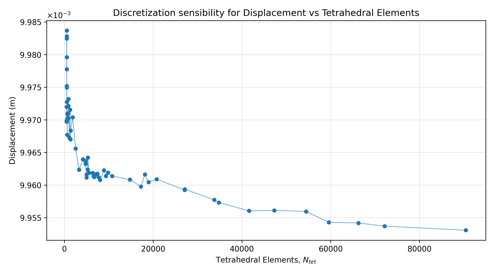
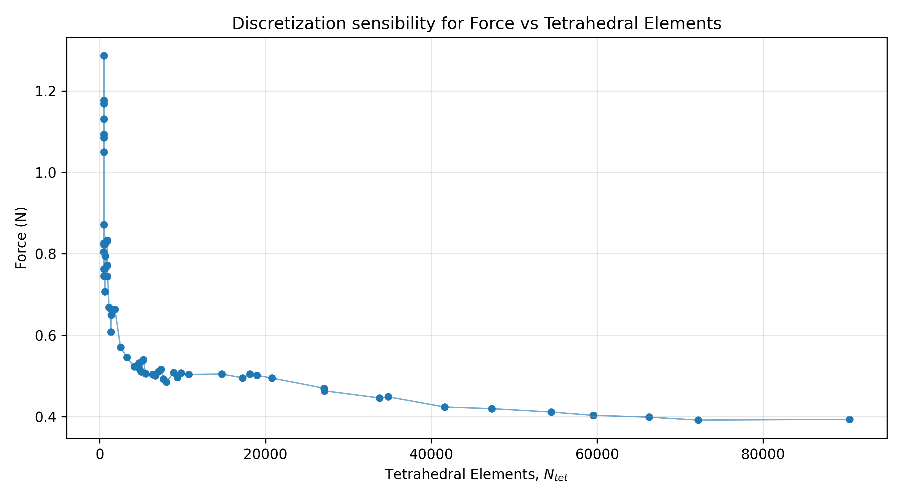
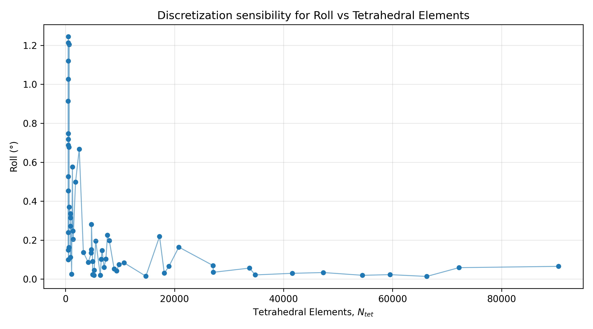
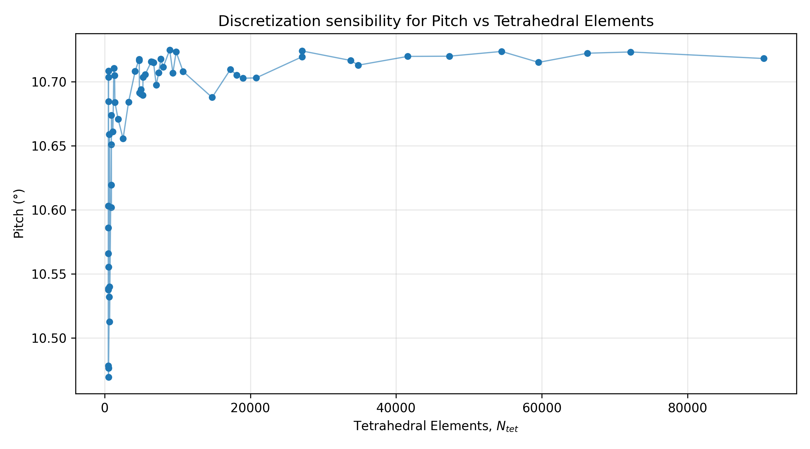
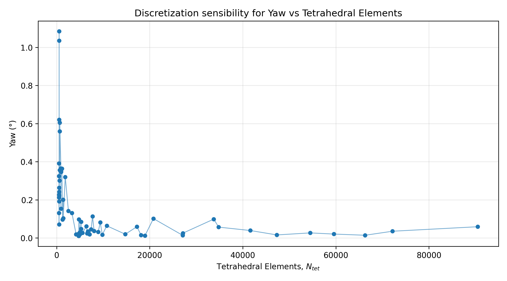
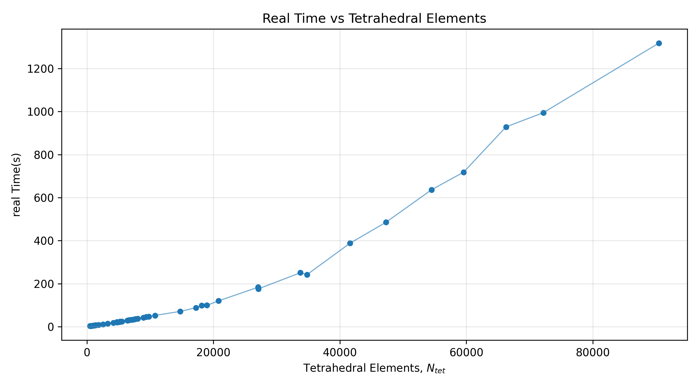
After studying the results obtained we analyized a smaller subset of elements within the first third of the curve, meaning they were running at a reasonable frame rate to perform real time or quasi-real time control. The following figure table the results obtained for the subset of elements between 0 and 40000 tetrahedra:
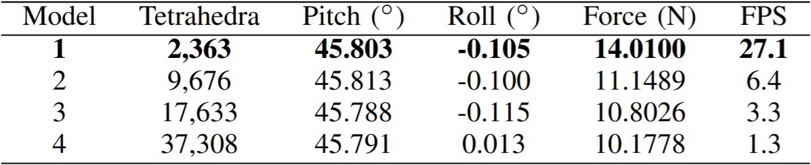
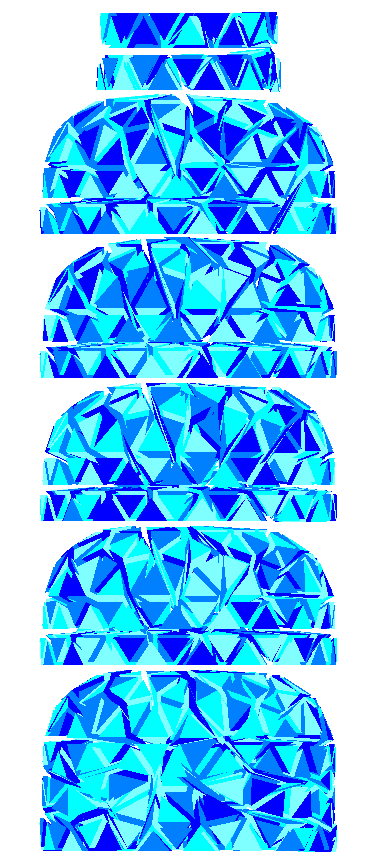
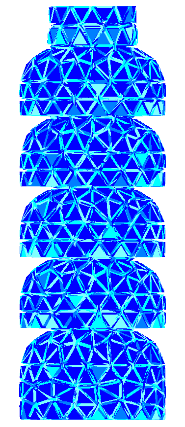
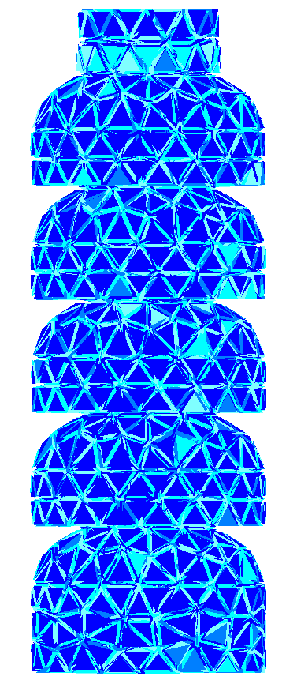
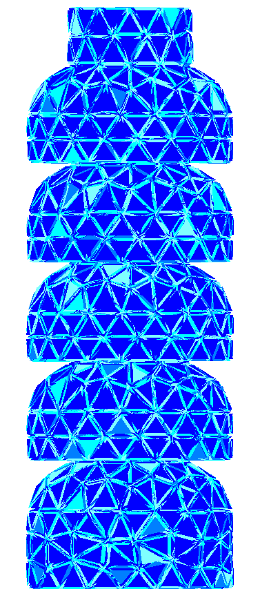
This section is organized in two experiment groups: graph search tuning and adaptive sampling tuning.
Expected behavior: larger alpha_G tends to favor geometric progress to the goal, while larger beta_G increases force-awareness in path selection.
In adaptive sampling, push_ratio controls how many momentum-biased candidates are generated, push_alpha controls the shift magnitude, and push_beta controls local spread.
We vary alpha_G and beta_G to analyze how the graph cost balance affects path selection.
Fixed sampling setup for this study: push_ratio=0.20, push_alpha=0.50, push_beta=0.80.
We keep graph weights fixed at alpha_G=0.50 and beta_G=0.50, and vary sampling parameters.
Parameters swept in this block: push_ratio, push_alpha, and push_beta.
Select an experiment to load its JSON cloud and trajectory files.
Loading plots...
The mechanical characterization of the soft robotic neck was performed using an Instron 34SC-1 Universal Testing Machine (UTM). Frontal tendon pulling tests were performed for several displacements (20 mm, 40 mm and 60 mm) at various rates (2.5 mm/s, 5 mm/s, 10 mm/s and 15 mm/s) for a total of 10 loading-unloading cycles. The following figure shows the experimental setup and the results obtained from the tests.
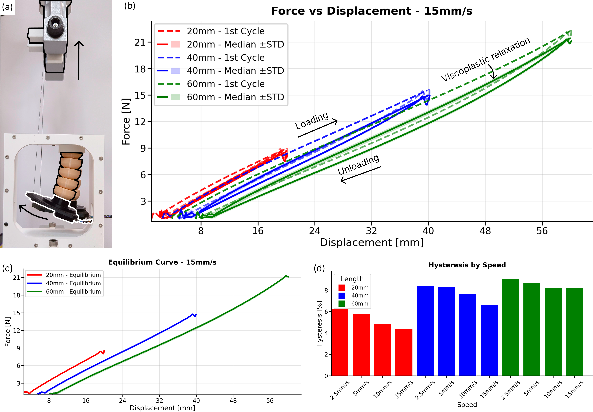
The material response of the system shows a mostly lineal behavior when analyzing the equilibrium curve, which leds to use a lineal elastic model or the more complete Neo-Hookean hyperelastic constitutive model. Using a Sequential Model-Based Optimization (SMBO) strategy within the Optuna library, we calibrated the parameters of the SOFA digital twin to fit the experimental data, obtaining a good match between the simulated and experimental responses for the Neo-Hookean model. The optimization was carried out using this cost function: \( f_c = \alpha \cdot \mathrm{error}_{\mathrm{force}} + \beta \cdot \mathrm{error}_{\theta} \), where $\alpha$ and $\beta$ are the weights assigned to the cable–force error and pitch–angle error, respectively. Pitch was weighted more strongly ($\alpha = 0.3$, $\beta = 1$) because angular measurements are less affected by cable friction and boundary effects than force readings, and therefore provide a more reliable indication of the global mechanical response.
From the results obtained on the equilibrium curve at a displacement rate of 15 mm/s, we obtained a median Young's Modulus $E = 2.3\ \mathrm{MPa}$ and a Poisson's ratio of $\nu = 0.43$ for the Neo-Hookean model, which are consistent with values reported in the literature for similar thermoplastic polyurethane filaments.